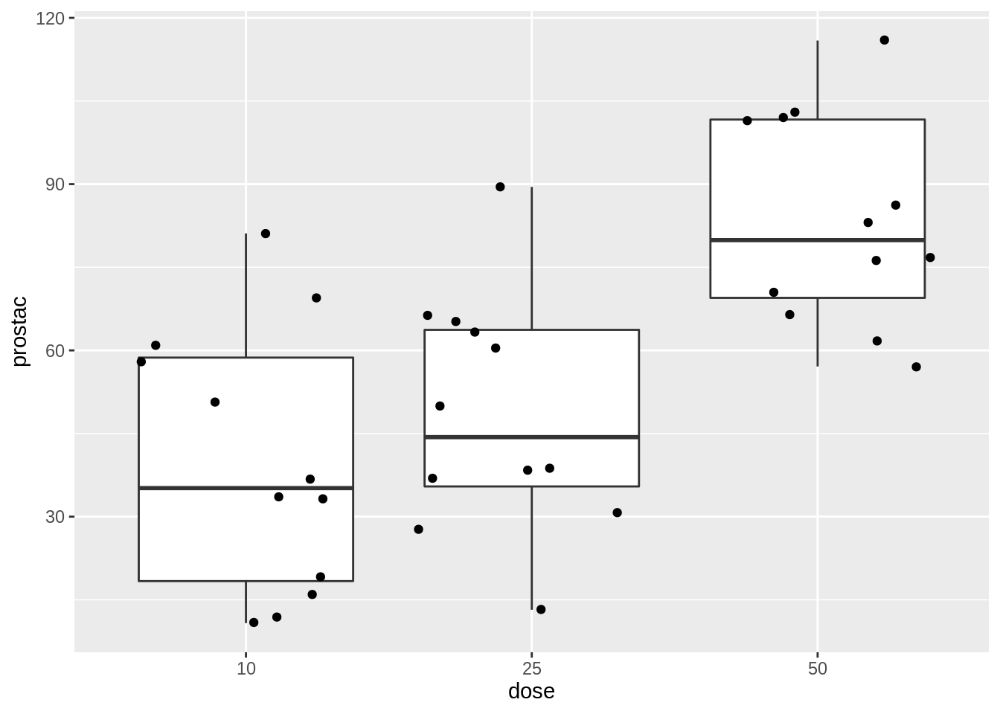

Researchers study the effect of arachidonic acid on prostacyclin level in blood plasma. They use 3 different doses of arachidonic acid: low (10 units), medium (25 units) and high dose (50 units) and measure the prostacycline levels in blood plasma using an elisa fluorescence measurement. Treatments are randomly assigned to rats and every rat originates from a different litter and is grown in a separate cage.
library("tidyverse")## ── Attaching packages ───────────────────────────── tidyverse 1.3.1 ──## ✔ ggplot2 3.3.5 ✔ purrr 0.3.4
## ✔ tibble 3.1.6 ✔ dplyr 1.0.8
## ✔ tidyr 1.2.0 ✔ stringr 1.4.0
## ✔ readr 2.1.2 ✔ forcats 0.5.1## ── Conflicts ──────────────────────────────── tidyverse_conflicts() ──
## ✖ dplyr::filter() masks stats::filter()
## ✖ dplyr::lag() masks stats::lag()The data can be found in a table of Voorbeeld 5.23 in the bachelor cours of statistics.
prostacyclin <- data.frame(
prostac=c(19.2, 10.8, 33.6, 11.9, 15.9, 33.3, 81.1, 36.7, 58.0, 60.8, 50.6, 69.4, 30.8, 27.6, 13.2, 38.8, 37.0, 38.3, 65.2, 66.4, 63.2, 49.9, 89.5, 60.5, 102.9, 57.1, 76.7, 70.5, 66.4, 76.3, 83.1, 61.7, 101.5, 86.2, 115.9, 102.1),
dose=factor(c(rep(10,12),rep(25,12),rep(50,12))))One-way anova to assess if there is an effect of the treatment. Tukey post-hoc test to assess pairwise differences between the treatment.
prostacyclin %>%
ggplot(aes(x=dose, y=prostac)) +
geom_boxplot(outlier.shape = NA) +
geom_point(position = "jitter")
prostacyclin %>%
ggplot(aes(sample=prostac)) +
geom_qq() +
geom_qq_line() +
facet_grid(cols = vars(dose))library(car)## Loading required package: carData##
## Attaching package: 'car'## The following object is masked from 'package:dplyr':
##
## recode## The following object is masked from 'package:purrr':
##
## somelibrary(multcomp)## Loading required package: mvtnorm## Loading required package: survival## Loading required package: TH.data## Loading required package: MASS##
## Attaching package: 'MASS'## The following object is masked from 'package:dplyr':
##
## select##
## Attaching package: 'TH.data'## The following object is masked from 'package:MASS':
##
## geyserlm1 <- lm(prostac~dose,data=prostacyclin)
Anova(lm1,type=3)There is an extremely significant effect of arachidonic acid on the average prostacyclin blood concentration in rats (p<0.001).
tukey <- glht(lm1,linfct=mcp(dose="Tukey"))
summary(tukey)##
## Simultaneous Tests for General Linear Hypotheses
##
## Multiple Comparisons of Means: Tukey Contrasts
##
##
## Fit: lm(formula = prostac ~ dose, data = prostacyclin)
##
## Linear Hypotheses:
## Estimate Std. Error t value Pr(>|t|)
## 25 - 10 == 0 8.258 8.698 0.949 0.613377
## 50 - 10 == 0 43.258 8.698 4.974 < 1e-04 ***
## 50 - 25 == 0 35.000 8.698 4.024 0.000883 ***
## ---
## Signif. codes: 0 '***' 0.001 '**' 0.01 '*' 0.05 '.' 0.1 ' ' 1
## (Adjusted p values reported -- single-step method)confint(tukey)##
## Simultaneous Confidence Intervals
##
## Multiple Comparisons of Means: Tukey Contrasts
##
##
## Fit: lm(formula = prostac ~ dose, data = prostacyclin)
##
## Quantile = 2.4535
## 95% family-wise confidence level
##
##
## Linear Hypotheses:
## Estimate lwr upr
## 25 - 10 == 0 8.2583 -13.0815 29.5982
## 50 - 10 == 0 43.2583 21.9185 64.5982
## 50 - 25 == 0 35.0000 13.6601 56.3399The average prostacyclin concentration is higher in the high dose group than in the low and moderate dose group (both p-values are smaller than p<0.001). The average concentration in the high dose group is 43.3 ng/ml (95% CI [21.9, 64.6]) and 35 ng/ml (95% CI [13.7, 56.3]) higher than in the low and moderate dose group, respectively (both p<0.001). The difference in average prostacyclin concentration between the moderate and low dose group is not significant (p=0.61, 95% CI on average difference [-13.1, 29.6] ng/ml).
There is an extremely significant effect of arachidonic acid on the average prostacyclin blood concentration in rats (p<0.001). The average concentration in the high dose group is 43.3 ng/ml (95% CI [21.9, 64.6]) and 35 ng/ml (95% CI [13.7, 56.3]) higher than in the low and moderate dose group, respectively (both p<0.001). The difference in average prostacyclin concentration between the moderate and low dose group is not significant (p=0.61, 95% CI on average difference [-13.1, 29.6] ng/ml).